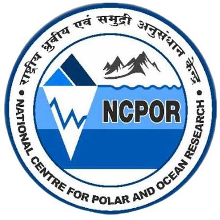
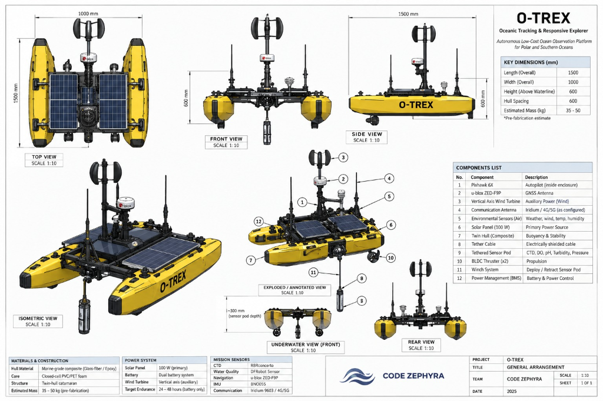

Autonomous Low-Cost Ocean Observation Platform for Polar and Southern Oceans. Designed for harsh marine environments, continuously monitoring ocean and atmospheric conditions and deploying an underwater sensor pod for targeted vertical profiling.

AUTONOMOUS LOW-COST OCEAN OBSERVATION PLATFORM FOR POLAR AND SOUTHERN OCEANS (SIH26065)
Critical ocean processes remain poorly observed, especially in remote polar and Southern Ocean environments. Severe environmental constraints, ice risks, high logistical costs, and limited endurance of existing surface platforms severely limit continuous long-term scientific data collection.
Sub-zero temperatures, ice hazards, freezing polar spray, and violent gale-force sea states threaten conventional marine hardware.
Polar oceans suffer from significant spatial and temporal oceanographic data gaps, hindering weather and climate prediction models.
Deploying traditional multi-million dollar oceanographic research vessels incurs extreme financial and fuel overheads for routine profiling.
Existing autonomous drift buoys and small craft lack long-term renewable power autonomy and targeted vertical profiling capabilities.
Inability to obtain timely in-situ ocean surface and depth telemetry impedes early detection of extreme polar events and climate dynamics.
O-TREX continuously monitors ocean and atmospheric parameters, detects anomalies, executes explainable profiling decisions, deploys a tethered underwater sensor pod, and syncs data when satellite connectivity restores.
Launch O-TREX into marine environment. Self-check sensors, power levels, GNSS fix, and establish satellite connectivity baseline.
Rather than relying on unvalidated black-box AI claims, O-TREX utilizes explainable oceanographic decision rules based on quantitative baseline deviations.
Profiling is automatically triggered when surface parameters exceed established physical thresholds against a 30-minute rolling baseline:
Determines whether energy budget allows a vertical winch profile:
Ensures optimal power preservation during critical polar weather windows.
Tracks seawater temperature across surface and profile depths to detect thermal layering and thermocline shifts.
Measures salt concentration (PSU) to understand freshwater meltwater influx and thermohaline circulation.
Accurately logs vertical depth coordinates during winch pod descent and ascent profiling.
Records surface barometric pressure, air temperature, and wind speed parameters for air-sea flux modeling.
Monitors ocean acidification rates and oxygen depletion zones critical for polar ecosystem health.
Detects water clarity, suspended particulate matter, and biological bloom activity in upper ocean layers.
When an anomaly trigger occurs, the onboard motorized winch lowers the electrically shielded tethered sensor pod. Equipped with a high-accuracy CTD (RBRconcerto), DO, pH, and Turbidity array, it captures precise vertical water column profiles without risking main hull buoyancy.

During severe polar communication blackouts or satellite geometry gaps, zero telemetry is lost. All sensor samples are stored in onboard non-volatile memory and synced immediately once the Iridium 9603 satellite link restores.
Commercial Off-The-Shelf (COTS) precision components engineered for maximum reliability and field repairability in extreme polar conditions.
SMART INDIA HACKATHON 2026 | TEAM ID: 12345 | PROBLEM STATEMENT ID: SIH26065
BUILDING AUTONOMOUS SYSTEMS FOR REAL-WORLD IMPACT. Committed to engineering robust, low-cost ocean observation solutions for extreme environments.
Test sensors, Pixhawk 6X autopilot, RPi 5 controller, and BMS energy systems.
Sealing leak tests, thruster navigation, and tethered winch pod deployment.
Autonomous GPS navigation, catamaran stability, and live satellite transmission.
Multi-day energy budget validation and store-and-forward blackout sync.
Sub-zero cold environment test, ice-risk assessment, and polar deployment.
Frequent targeted vertical profiling, continuous surface salinity & temp monitoring, and filling polar oceanographic data gaps.
Autonomous waypoint operation, zero human intervention during routine sampling, and zero data loss during polar blackouts.
Cost-effective reusable platform for research institutions, polar research programs, and marine environmental monitoring.
O-TREX — OCEANIC TRACKING & RESPONSIVE EXPLORER | TEAM CODE ZEPHYRA | SIH26065
Access the live interactive simulation environment for O-TREX autonomous waypoint navigation and depth profiling.
LAUNCH O-TREX SIMULATION